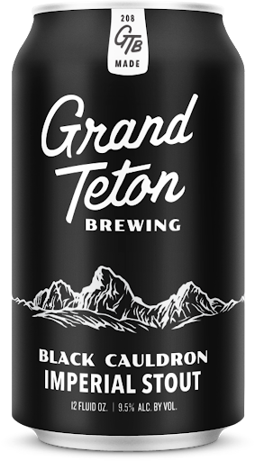

HOME
STOUTS
Black Cauldron
Grand Teton Brewing
2019 GABF Silver Medal in Imperial Stout Category. This thick, rich drink is brewed with plenty of caramel and roasted malts and subtly spiced with Cascade and Galena hops. Accentuating the natural smokiness of the brew by adding a small amount of beechwood-smoked malt. Recommended to pair it with full-flavored grilled or roasted meats. Rich desserts like chocolate cake, truffles, fruit tarts, caramel flan or crème brulee are excellent matches.
Located in Teton Valley, Idaho, Grand Teton Brewing is committed to crafting only the highest quality ales and lagers. "We take measures at every point in our brewing, packaging and shipping process to ensure that we deliver only the best beers to you".
Check out their site HERE 